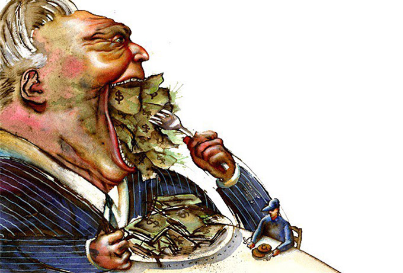

Por que o veganismo tem que ser anticapitalista
Vegetarianos e veganos, este texto é para vocês. Principalmente se você é um dos muitos que se conclamam liberais e acreditam que o veganismo é suficiente para “salvar o planeta”, ou se é um entusiasta do nosso sistema econômico atual. Essas ideologias são paradoxais, e se você acha que elas podem andar juntas, alguma das teorias precisa ser melhor destrinchada.
Primeiro, é importante partir do pressuposto de que o não consumo de carne tem dentre as suas motivações não só a “dó” que você tem do animal. As motivações, além da crueldade com os animais, visam - ou devem visar - a preservação do meio ambiente e o combate à exploração e opressão humana. O Veganismo, em sua essência, além de uma luta anti-especista, é uma luta contra a opressão. Historicamente, no movimento feminista, já no caso das sufragistas, havia um pensamento acerca da libertação animal. E movimentos comunistas de certas vertentes já do século XX, tinham esse entendimento acerca disso.
Cabe observar que tal ideologia não deve ser pensada como um hábito (de não consumo), mas sim como um ideal progressista, que visa reestruturar como funcionam as relações de produção e exploração, tanto animal quanto humana. Quando, contudo, o capitalismo se apropria do veganismo, esta ideologia limita-se apenas ao consumo. Isso, porque uma vez que ele toma para si a “causa” vegana, há uma apropriação do que é pensado e transformado na compra e venda de produtos, esvaziando o significado de uma luta anti-especista, interseccional e abolicionista, tanto em relação aos animais, como aos humanos. Associar o veganismo ao neoliberalismo é pensar nele como causa própria e individual, sem entender o porquê de estar ou não consumindo algo, retirando uma ideologia e tornando um hábito de consumo.
É importante iluminar, também, o fato de que o modelo de produção capitalista é contraditório em relação aos resultados buscados pela luta vegana. No que diz respeito à preservação do meio ambiente, é importante entender que o capitalismo é um sistema econômico que depende de uma grande magnitude de consumo, da obsolescência planejada e da produção em massa, aspectos que estão diretamente ligados à poluição que geramos. O nível de lixo que produzimos, resíduos e poluentes do ar, está necessariamente atrelado ao neoliberalismo vigente, assim como a quantidade de locais desmatados para dar lugar à produção de matérias primas e o ritmo de consumo que já demonstrou estar esgotando nosso planeta.
Mas o sistema capitalista não se limita a isso. Ele depende da exploração do indivíduo por outros indivíduos. Quanto menos o empregador puder pagar, melhor. Ouso dizer que o capitalismo atual, para se manter, veste-se de princípios não capitalistas, como trabalho análogo à escravidão, falsa igualdade entre gênero, raça, etnia e classe e uma grande pitada de violência coercitiva que mantém as pessoas nessa bola de neve. O bom laissez faire em seu melhor estilo, como quem diz: “deixemos livres os que exploram, não tão livres os explorados”. O capitalismo se fundou sobre muito sangue de escravizados, mulheres, trabalhadores, indígenas, LGBTQ+ e também o animal (levando em conta a interseccionalidade). Ele depende da opressão e exploração e não há social-democracia, infelizmente, que acabe com isso. Mesmo em locais onde parece que tudo corre lindamente, não nos esqueçamos que os diamantes de Miami vêm com sangue de Ruanda.
No mais, essa causa, quando limitada aos alimentos, ainda é abordada de forma elitista, no sentido de que não conversa com as classes mais baixas e com a periferia, e concentra informações. Não obstante, a distribuição de comida é, não só desigual em magnitude, mas também em qualidade da alimentação. O capitalismo, por tratar comida como mercadoria, segrega-a como qualquer outro produto, desde sua escolha até seu preparo. Assim, ao considerar a alimentação como um ato político social, como trouxe, busco por demonstrar como essa escolha não se trata só de um hábito, mas manifesta, na ótica do materialismo histórico, expressão da desigualdade do sistema econômico, e por isso liga-se de forma tão pungente às classes sociais.
Levantar a bandeira vegana é se levantar contra a opressão, e se você só se levanta contra a animal, ainda faltam ajustes de hipocrisia. O veganismo é uma luta política, e, por isso, requer coerência ideológica. Portanto, não comer animais, como um ato isolado, não te faz vegano. Ademais, tal ideologia também requer não fechar os olhos para como a alimentação está também diretamente ligada à questão de classes. Que acabemos com a fome, antes de querer que todos sigam tal hábito, que ainda é elitista hoje. Sejamos realistas: um canudo, um copo e até mesmo um pedaço de carne que deixamos de consumir, sem o resto da luta abolicionista, faz bem só pro ego e para dormir melhor. Veganismo sem anticapitalismo é firula.